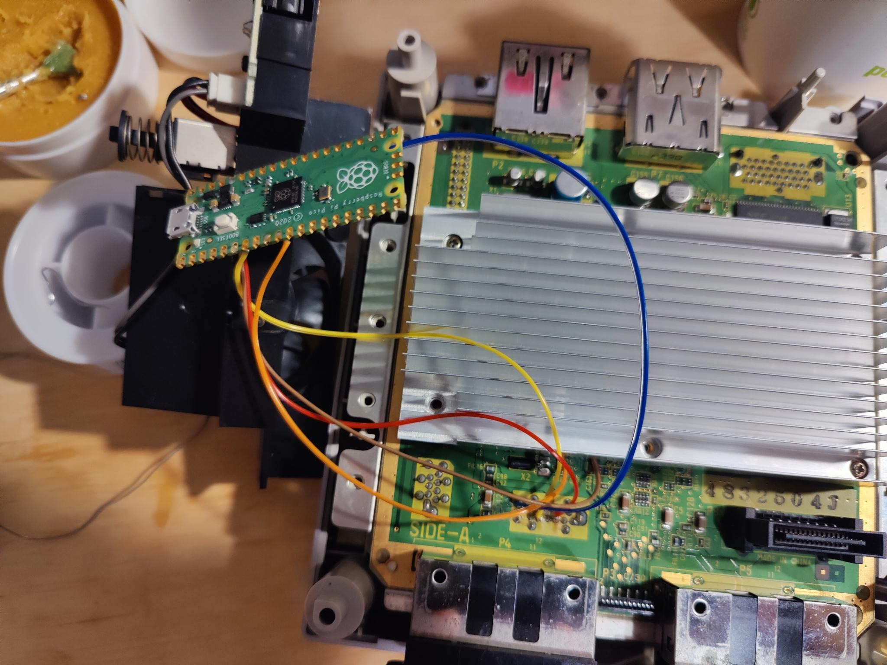
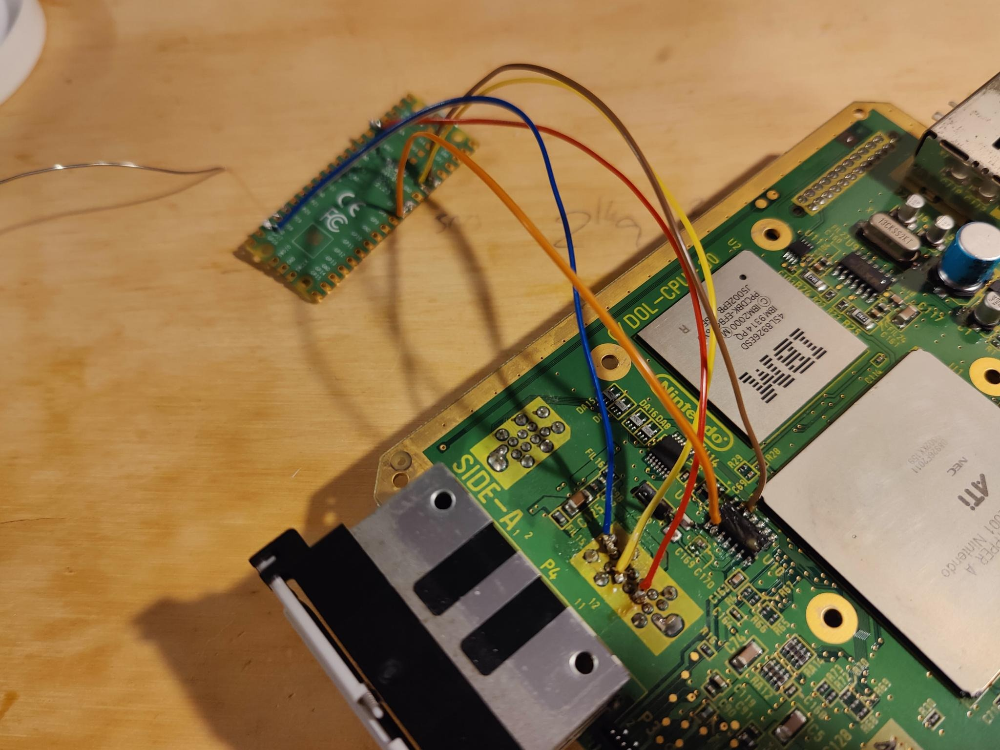
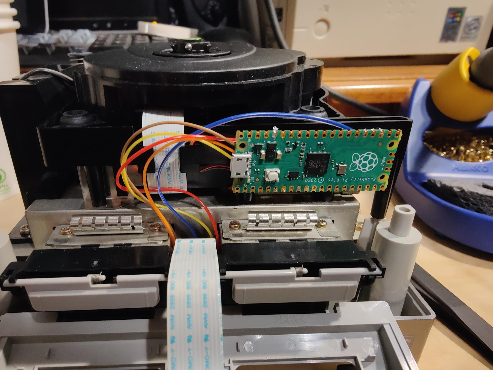

GameCube Picoboot Mod
This mod was redundant because I already had a way to boot homebrew on my GameCube. I used a Xenochip to boot into Swiss through a burnt disc. When I heard of Picoboot, I thought it would be a good mod to challenge my soldering skills, while also making it easier to boot homebrew on my GameCube.
The only thing this mod requires is a Raspberry Pi Pico, which comes at around $7. This mod is very affordable, which gave me even more motivation to take it on.
This was my first soldering mod that I had no major hiccups with. Maybe it was the fact that I had more experience under my belt, but I found this mod to be straight forward and easy, despite it looking fairly complex.
  